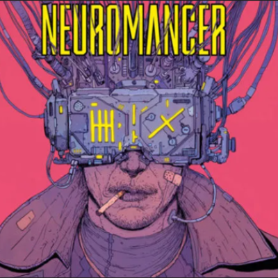

Всё больше писателей-фантастов стало вносить свой вклад в развитие жанра: Руди Рюкер (Rudy Rucker), Джефф Нун (Jeff Noon), Джордж Алек Эффинджер (George Alec Effinger). Из фильмов немаловажную роль сыграл «Бегущий по лезвию» (Blade Runner), вышедший в 1982 году. Картина идеально передала атмосферу мрачного будущего, а сам фильм закрепил за собой образ каноничной стилизации мира киберпанка. Затем вышли фильмы: «Робокоп» (RoboCop), «Отель Новая Роза» (New Rose Hotel), «Тринадцатый Этаж» (The Thirteenth Floor), «Джонни Мнемоник» (Johnny Mnemonic). Но особого успеха достигла трилогия «Матрица» (The Matrix), ставшая культовым фильмом не только среди поклонников жанра.
